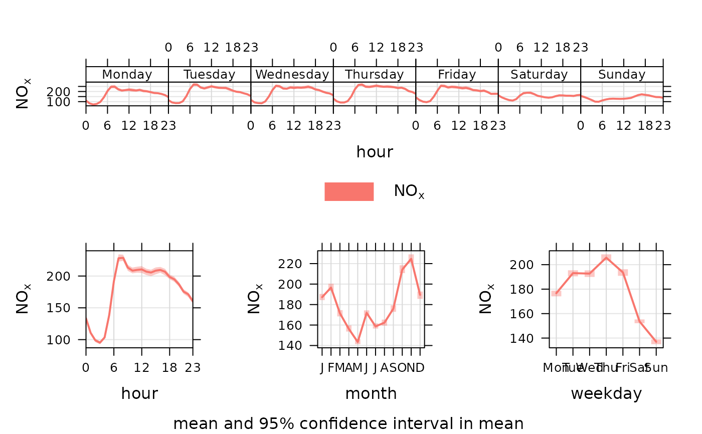

Plots the diurnal, day of the week and monthly variation for different variables, typically pollutant concentrations. Four separate plots are produced.
Usage
timeVariation(
mydata,
pollutant = "nox",
local.tz = NULL,
normalise = FALSE,
xlab = c("hour", "hour", "month", "weekday"),
name.pol = pollutant,
type = "default",
group = NULL,
difference = FALSE,
statistic = "mean",
conf.int = 0.95,
B = 100,
ci = TRUE,
cols = "hue",
ref.y = NULL,
key = NULL,
key.columns = 1,
start.day = 1,
panel.gap = 0.2,
auto.text = TRUE,
alpha = 0.4,
month.last = FALSE,
plot = TRUE,
...
)Arguments
- mydata
A data frame of hourly (or higher temporal resolution data). Must include a
datefield and at least one variable to plot.- pollutant
Name of variable to plot. Two or more pollutants can be plotted, in which case a form like
pollutant = c("nox", "co")should be used.- local.tz
Should the results be calculated in local time that includes a treatment of daylight savings time (DST)? The default is not to consider DST issues, provided the data were imported without a DST offset. Emissions activity tends to occur at local time e.g. rush hour is at 8 am every day. When the clocks go forward in spring, the emissions are effectively released into the atmosphere typically 1 hour earlier during the summertime i.e. when DST applies. When plotting diurnal profiles, this has the effect of “smearing-out” the concentrations. Sometimes, a useful approach is to express time as local time. This correction tends to produce better-defined diurnal profiles of concentration (or other variables) and allows a better comparison to be made with emissions/activity data. If set to
FALSEthen GMT is used. Examples of usage includelocal.tz = "Europe/London",local.tz = "America/New_York". SeecutDataandimportfor more details.- normalise
Should variables be normalised? The default is
FALSE. IfTRUEthen the variable(s) are divided by their mean values. This helps to compare the shape of the diurnal trends for variables on very different scales.- xlab
x-axis label; one for each sub-plot.
- name.pol
Names to be given to the pollutant(s). This is useful if you want to give a fuller description of the variables, maybe also including subscripts etc.
- type
typedetermines how the data are split i.e. conditioned, and then plotted. The default is will produce a single plot using the entire data. Type can be one of the built-in types as detailed incutDatae.g. “season”, “year”, “weekday” and so on. For example,type = "season"will produce four plots — one for each season.It is also possible to choose
typeas another variable in the data frame. If that variable is numeric, then the data will be split into four quantiles (if possible) and labelled accordingly. If type is an existing character or factor variable, then those categories/levels will be used directly. This offers great flexibility for understanding the variation of different variables and how they depend on one another.Only one
typeis allowed intimeVariation.- group
This sets the grouping variable to be used. For example, if a data frame had a column
sitesettinggroup = "site"will plot all sites together in each panel. See examples below.- difference
If two pollutants are chosen then setting
difference = TRUEwill also plot the difference in means between the two variables aspollutant[2] - pollutant[1]. Bootstrap 95\ the difference in means are also calculated. A horizontal dashed line is shown at y = 0. The difference can also be calculated if there is a column that identifies two groups e.g. having usedsplitByDate. In this case it is possible to calltimeVariationwith the optiongroup = "split.by"anddifference = TRUE.- statistic
Can be “mean” (default) or “median”. If the statistic is ‘mean’ then the mean line and the 95\ interval in the mean are plotted by default. If the statistic is ‘median’ then the median line is plotted together with the 5/95 and 25/75th quantiles are plotted. Users can control the confidence intervals with
conf.int.- conf.int
The confidence intervals to be plotted. If
statistic = "mean"then the confidence intervals in the mean are plotted. Ifstatistic = "median"then theconf.intand1 - conf.intquantiles are plotted.conf.intcan be of length 2, which is most useful for showing quantiles. For exampleconf.int = c(0.75, 0.99)will yield a plot showing the median, 25/75 and 5/95th quantiles.- B
Number of bootstrap replicates to use. Can be useful to reduce this value when there are a large number of observations available to increase the speed of the calculations without affecting the 95\ interval calculations by much.
- ci
Should confidence intervals be shown? The default is
TRUE. Setting this toFALSEcan be useful if multiple pollutants are chosen where over-lapping confidence intervals can over complicate plots.- cols
Colours to be used for plotting. Options include “default”, “increment”, “heat”, “jet” and
RColorBrewercolours — see theopenairopenColoursfunction for more details. For user defined the user can supply a list of colour names recognised by R (typecolours()to see the full list). An example would becols = c("yellow", "green", "blue")- ref.y
A list with details of the horizontal lines to be added representing reference line(s). For example,
ref.y = list(h = 50, lty = 5)will add a dashed horizontal line at 50. Several lines can be plotted e.g.ref.y = list(h = c(50, 100), lty = c(1, 5), col = c("green", "blue")). Seepanel.ablinein thelatticepackage for more details on adding/controlling lines.- key
By default
timeVariationproduces four plots on one page. While it is useful to see these plots together, it is sometimes necessary just to use one for a report. IfkeyisTRUE, a key is added to all plots allowing the extraction of a single plot with key. See below for an example.- key.columns
Number of columns to be used in the key. With many pollutants a single column can make to key too wide. The user can thus choose to use several columns by setting
columnsto be less than the number of pollutants.- start.day
What day of the week should the plots start on? The user can change the start day by supplying an integer between 0 and 6. Sunday = 0, Monday = 1, ... For example to start the weekday plots on a Saturday, choose
start.day = 6.- panel.gap
The gap between panels in the hour-day plot.
- auto.text
Either
TRUE(default) orFALSE. IfTRUEtitles and axis labels will automatically try and format pollutant names and units properly e.g. by subscripting the ‘2’ in NO2.- alpha
The alpha transparency used for plotting confidence intervals. 0 is fully transparent and 1 is opaque. The default is 0.4
- month.last
Should the order of the plots be changed so the plot showing monthly means be the last plot for a logical hierarchy of averaging periods?
- plot
Should a plot be produced?
FALSEcan be useful when analysing data to extract plot components and plotting them in other ways.- ...
Other graphical parameters passed onto
lattice:xyplotandcutData. For example, in the case ofcutDatathe optionhemisphere = "southern".
Value
an openair object. The four components of
timeVariation are: day.hour, hour, day and
month. Associated data.frames can be extracted directly using the
subset option, e.g. as in plot(object, subset = "day.hour"),
summary(output, subset = "hour"), etc., for output <-
timeVariation(mydata, "nox")
Details
The variation of pollutant concentrations by hour of the day and day of the week etc. can reveal many interesting features that relate to source types and meteorology. For traffic sources, there are often important differences in the way vehicles vary by vehicles type e.g. less heavy vehicles at weekends.
The timeVariation function makes it easy to see how concentrations
(and many other variable types) vary by hour of the day and day of the week.
The plots also show the 95\ confidence intervals in the mean are calculated through bootstrap simulations, which will provide more robust estimates of the confidence intervals (particularly when there are relatively few data).
The function can handle multiple pollutants and uses the flexible type
option to provide separate panels for each 'type' — see cutData for
more details. timeVariation can also accept a group option
which is useful if data are stacked. This will work in a similar way to
having multiple pollutants in separate columns.
The user can supply their own ylim e.g. ylim = c(0, 200) that
will be used for all plots. ylim can also be a list of length four to
control the y-limits on each individual plot e.g. ylim =
list(c(-100,500), c(200, 300), c(-400,400), c(50,70)). These pairs
correspond to the hour, weekday, month and day-hour plots respectively.
The option difference will calculate the difference in means of two
pollutants together with bootstrap estimates of the 95\
in the difference in the mean. This works in two ways: either two pollutants
are supplied in separate columns e.g. pollutant = c("no2", "o3"), or
there are two unique values of group. The difference is calculated as
the second pollutant minus the first and is labelled as such. Considering
differences in this way can provide many useful insights and is particularly
useful for model evaluation when information is needed about where a model
differs from observations by many different time scales. The manual contains
various examples of using difference = TRUE.
Note also that the timeVariation function works well on a subset of
data and in conjunction with other plots. For example, a
polarPlot may highlight an interesting feature for a particular
wind speed/direction range. By filtering for those conditions
timeVariation can help determine whether the temporal variation of
that feature differs from other features — and help with source
identification.
In addition, timeVariation will work well with other variables if
available. Examples include meteorological and traffic flow data.
Depending on the choice of statistic, a subheading is added. Users can
control the text in the subheading through the use of sub e.g.
sub = "" will remove any subheading.
See also
Other time series and trend functions:
TheilSen(),
calendarPlot(),
runRegression(),
smoothTrend(),
timePlot(),
timeProp(),
trendLevel()
Examples
# basic use
timeVariation(mydata, pollutant = "nox")

# for a subset of conditions
if (FALSE) { # \dontrun{
timeVariation(subset(mydata, ws > 3 & wd > 100 & wd < 270),
pollutant = "pm10", ylab = "pm10 (ug/m3)")
} # }
# multiple pollutants with concentrations normalised
if (FALSE) timeVariation(mydata, pollutant = c("nox", "co"), normalise = TRUE) # \dontrun{}
# show BST/GMT variation (see ?cutData for more details)
# the NOx plot shows the profiles are very similar when expressed in
# local time, showing that the profile is dominated by a local source
# that varies by local time and not by GMT i.e. road vehicle emissions
if (FALSE) timeVariation(mydata, pollutant = "nox", type = "dst", local.tz = "Europe/London") # \dontrun{}
## In this case it is better to group the results for clarity:
if (FALSE) timeVariation(mydata, pollutant = "nox", group = "dst", local.tz = "Europe/London") # \dontrun{}
# By contrast, a variable such as wind speed shows a clear shift when
# expressed in local time. These two plots can help show whether the
# variation is dominated by man-made influences or natural processes
if (FALSE) timeVariation(mydata, pollutant = "ws", group = "dst", local.tz = "Europe/London") # \dontrun{}
## It is also possible to plot several variables and set type. For
## example, consider the NOx and NO2 split by levels of O3:
if (FALSE) timeVariation(mydata, pollutant = c("nox", "no2"), type = "o3", normalise = TRUE) # \dontrun{}
## difference in concentrations
if (FALSE) timeVariation(mydata, poll= c("pm25", "pm10"), difference = TRUE) # \dontrun{}
# It is also useful to consider how concentrations vary by
# considering two different periods e.g. in intervention
# analysis. In the following plot NO2 has clearly increased but much
# less so at weekends - perhaps suggesting vehicles other than cars
# are important because flows of cars are approximately invariant by
# day of the week
if (FALSE) { # \dontrun{
mydata <- splitByDate(mydata, dates= "1/1/2003", labels = c("before Jan. 2003", "After Jan. 2003"))
timeVariation(mydata, pollutant = "no2", group = "split.by", difference = TRUE)
} # }
## sub plots can be extracted from the openair object
if (FALSE) { # \dontrun{
myplot <- timeVariation(mydata, pollutant = "no2")
plot(myplot, subset = "day.hour") # top weekday and plot
} # }
## individual plots
## plot(myplot, subset="day.hour") for the weekday and hours subplot (top)
## plot(myplot, subset="hour") for the diurnal plot
## plot(myplot, subset="day") for the weekday plot
## plot(myplot, subset="month") for the monthly plot
## numerical results (mean, lower/upper uncertainties)
## myplot$data$day.hour # the weekday and hour data set
## summary(myplot, subset = "hour") #summary of hour data set
## head(myplot, subset = "day") #head/top of day data set
## tail(myplot, subset = "month") #tail/top of month data set
## plot quantiles and median
if (FALSE) { # \dontrun{
timeVariation(mydata, stati="median", poll="pm10", col = "firebrick")
## with different intervals
timeVariation(mydata, stati="median", poll="pm10", conf.int = c(0.75, 0.99),
col = "firebrick")
} # }